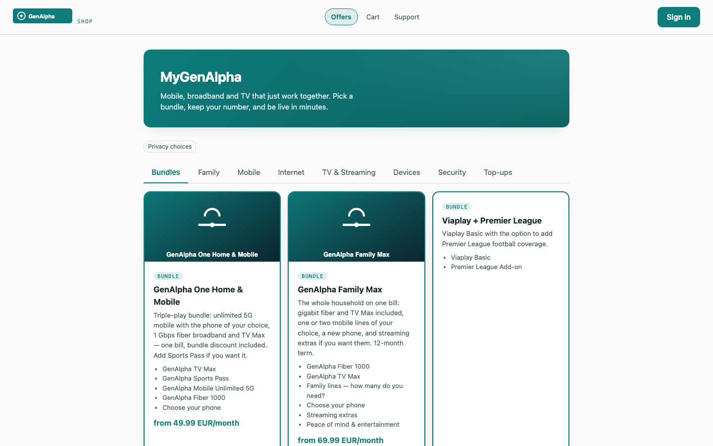
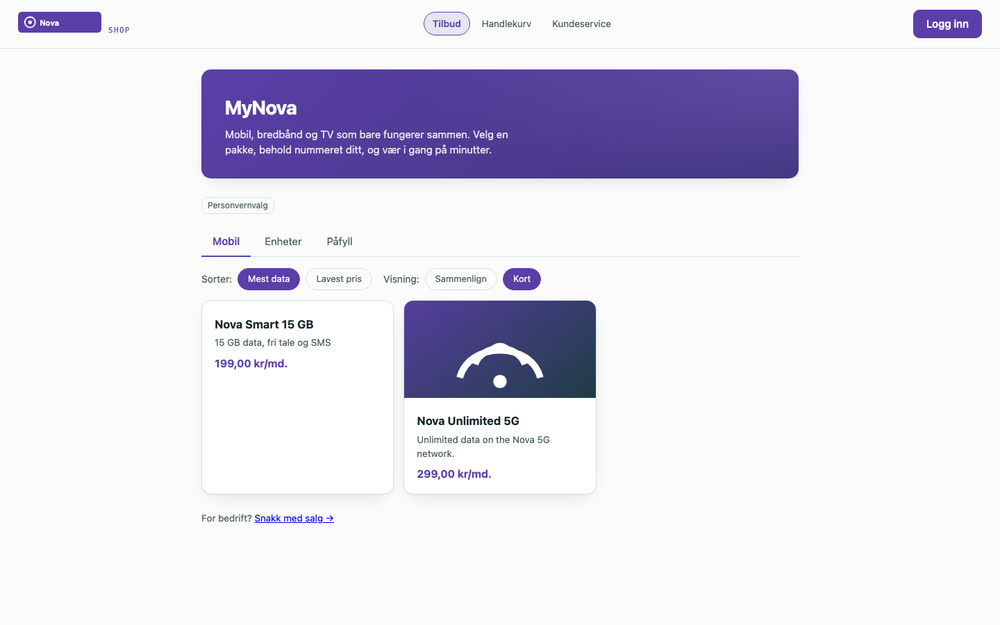
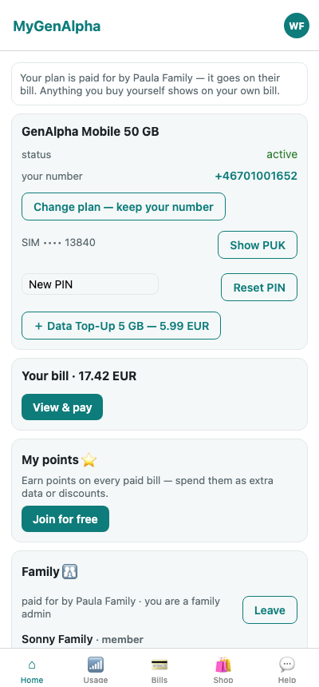
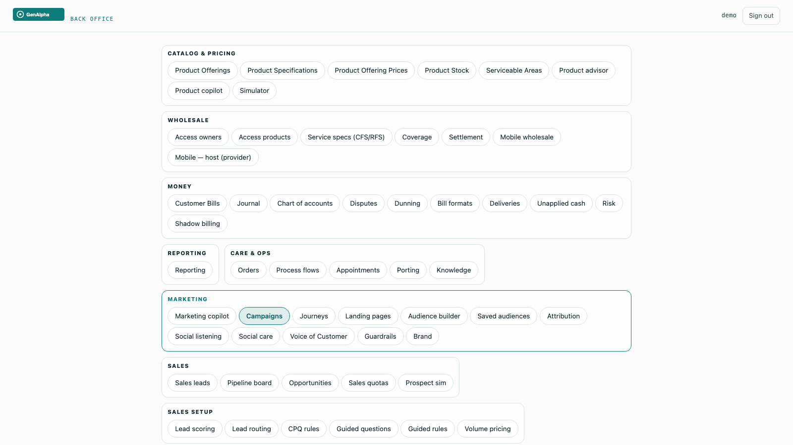
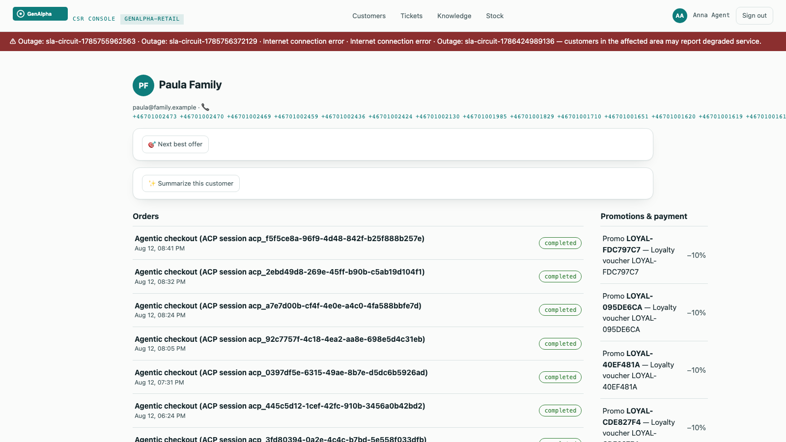
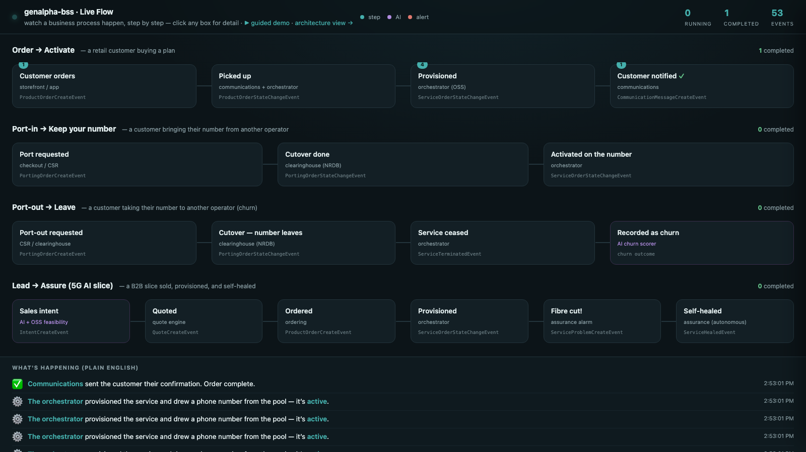
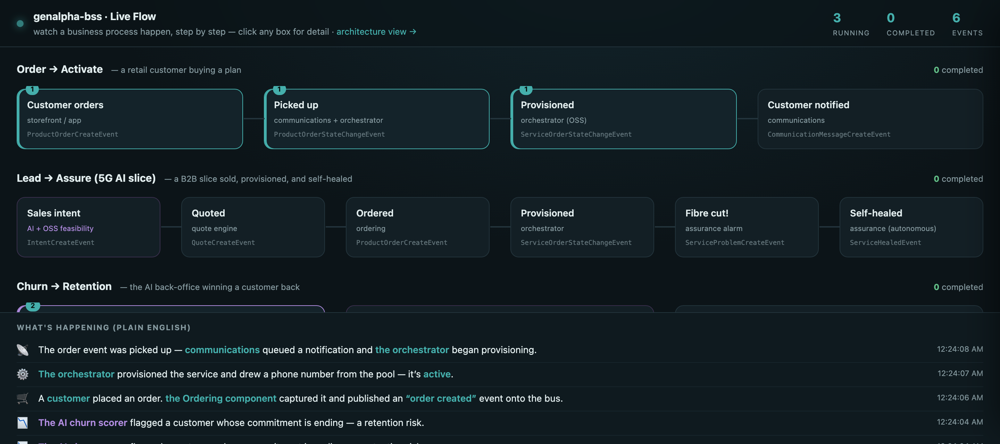
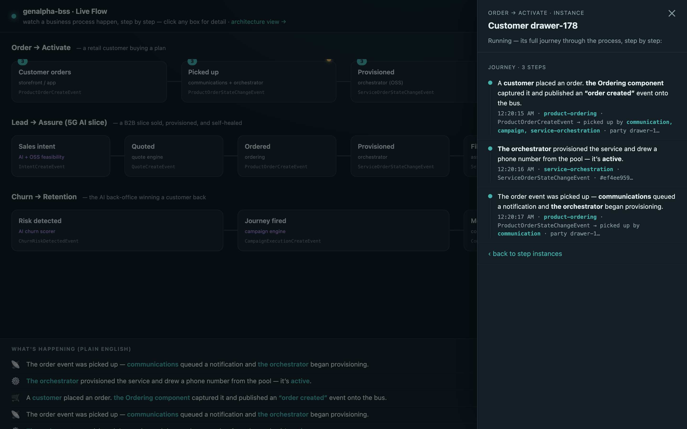

This is the story of building a telecom Business Support System — the software an operator sells, bills, and serves customers through — from an empty repository to thirty-three composable components, six customer surfaces, and thirty-five end-to-end test suites that all pass in a real browser. It was built by one person working with an AI pair, over a compressed and relentless arc, held together by a single discipline: nothing is real until it is proven, end to end, against the real thing.
It is a memoir, not a manual. There is a reference book to be written about how the pieces fit; this is not it. This is about the decisions, the dead ends, the two-in-the-morning debugging, and the method — and about what it means that a system this size was built the way it was.
Three convictions run through every chapter. The first is vendor-neutrality: any identity provider, any database, any message broker, any AI model, any payment processor, any number-porting authority. Nothing operator-specific is hardcoded, ever. The second is verification: official conformance kits, real-database migration tests, isolation proofs, and every feature driven through a real browser. The third is honesty about what's a stand-in: a thin network layer, a mock payment processor, a shaped-but-unconnected clearing house — each named plainly, so a demo stays credible instead of turning naive.
And beneath all three, the thread that makes this book unusual: it was built with an AI as the executing partner — Anthropic's Claude Fable 5, the most capable generally-available model of its moment. Not autocomplete. A collaborator that wrote the services, argued the architecture, made real mistakes, and got caught by the tests. The book is, quietly, a field report on what building at this scale with a model this capable actually feels like.
Every claim in these pages has a commit, a test, or a screenshot behind it. That is not a stylistic choice. It is the whole argument.
Why build a Business Support System at all — and the discipline that would define everything that came after.
Every telecom operator on earth runs software to answer three questions: what can a customer buy, what do they owe, and how do we serve them when something breaks. That software is called the BSS — the Business Support System — and it is, almost universally, the place operators are most trapped. The catalog, the ordering, the billing, the care: bought as one enormous suite from one enormous vendor, welded together over a decade, impossible to leave. The industry has a word for the escape hatch it wishes it had — composable — and a standards body, TM Forum, that publishes the blueprint for it. What almost nobody has is the thing built end to end, out in the open, where you can watch it work.
So that was the bet. Build the composable BSS the industry keeps promising, as a real product, and make it vendor-neutral from the first line of code. The operator I know best runs one particular identity stack; the product must never depend on it. It must run against any OpenID Connect provider, any PostgreSQL, any Kafka-protocol broker. Neutrality wasn't a feature to add later. It was the shape of the thing.
The first five components were the spine of any BSS. A product catalog (the shelf: what exists to sell, at what price, in what bundles). Product ordering (the checkout and its aftermath). Product inventory (what each customer actually has). A party component (the people and companies you do business with, kept deliberately separate from their login). And a gateway — one front door, so the outside world touches exactly one thing. Each spoke a published TM Forum Open API, which meant that from day one the system talked in a language other vendors' software already understood.
Constraints chosen early are cheap on day one and priceless on day one hundred.
That is the whole thesis of the first act, and it would be tested again and again. Every time the temptation appeared to hardcode something — the IdP, the number format, the country — the neutrality constraint said no, build a seam. Seams cost a little now. But a system made of seams is a system you can take apart, swap pieces of, and sell to an operator who already owns half of it. A monolith is a system you can only sell whole, to someone who owns none of it. There are not many of those customers left.
The second decision mattered more than the first, though it looked like a chore. How do you know a thing works? The easy answer — write a unit test, watch it go green — is a comfortable lie. A unit test proves that the code does what the code's author thought it should. It says nothing about whether the author understood the problem, whether the pieces fit, or whether a real customer clicking a real button gets a real result.
So the answer became doctrine, and the doctrine was severe. First: the original components would pass TM Forum's official Conformance Test Kits — an independent, published suite that proves a component really implements a standard rather than merely resembling it. Not "we think it's TMF620." An outside authority agrees it's TMF620. Five kits at first; the doctrine would compound until, near the end of this story, eleven kits agreed — and the two that deliberately didn't became one of the book's most useful lessons. Second: every feature, without exception, would be driven through a real browser — register, configure, add to cart, pay, watch the order complete, watch the notification arrive. If a human couldn't do it in a browser, it wasn't done.
There was a subtler third rule, learned the hard way. The tests ran against an in-memory database that imitated PostgreSQL. Close, but not identical — and "close but not identical" is precisely where the migrations break. So the migrations grew their own test that spun up a real PostgreSQL and ran every schema change against it. The in-memory database is for speed. The real one is for truth.
Verification isn't overhead. It is the thing that lets you move fast and still trust the result.
This is the discipline that would, later, make it rational to build alongside an AI at a speed no solo human could sustain. When the model wrote a service, the tests didn't care that it was confident. They cared whether an order actually placed, whether a row was actually isolated, whether a real browser actually saw the result. The first "ALL CHECKS PASSED" scroll past the terminal was not a milestone. It was the establishment of a court of law that would preside over everything that followed.
The collaborator has a name: Claude Fable 5. It wrote most of the lines in this system. Describing the working method is the honest heart of the book, because the method is the thing that's actually new. A human held intent and judgment — what to build, whether it was enough, which architectural fork to take. Fable 5 held execution and breadth — the services, the boilerplate, the cross-component wiring, and the ability to keep an entire thirty-component system in view at once, which no human can.
What it felt like, most of the time, was uncanny. You describe a component — "a promotion service, anonymous code validation, redemption tied to an order, a discount line on the bill" — and a few minutes later it exists, wired into the gateway, event-publishing, tenant-isolated, with a test that drives it through the browser. The model doesn't just write the service; it remembers the seventeen other services it has to speak to, and the tenant rules, and the event envelope, and it wires them without being told.
But a memoir that only showed the magic would be the same lie as a passing unit test. Fable 5 was wrong, sometimes, and wrong in the specific way capable models are wrong: fluently. It misdiagnosed a gnarly network bug twice before the evidence forced the truth. It once added a configuration value to the wrong service because a text-replacement matched the first occurrence instead of the intended one — a mistake no human would make and no human would catch by reading, but the test caught it in seconds, because the number never activated on the ported line.
The verification discipline isn't a brake on a capable model. It is the thing that lets you use the capability at full speed without fooling yourself.
That is the shape of the partnership, and it will recur in every chapter that follows: the model proposes at a breadth and speed that is genuinely startling; the human decides and, crucially, the tests decide too — not the model's confidence, and not the human's. Every commit in the repository is co-authored by Claude Fable 5. The credit is on the record, not just in the prose.
Five components became thirty. One deployment learned to hold two operators who must never see each other. And the whole invisible machine learned to show its face.
After the first five, the components came like tide. Stock, so the shop could tell the truth about the last handset. Payment, so money could move. Billing, so a customer could be charged for what they used. Qualification, so an address could be asked whether fibre even reached it. Appointments, tickets, interactions, communications, carts, usage, agreements, promotions, roles, addresses, recommendations, the card vault, documents. Each one a small, self-contained business, each one speaking a published standard, each one wired into the same nervous system.
That nervous system was the thing that made thirty components a system instead of thirty programs. The rule was simple and never broken: a component never reaches into another's database, and never calls another and waits. It writes what happened to its own tables, in the same transaction as its own work, and a background process ships that record onto a shared log. Other components listen. When an order completes, the ordering component doesn't tell billing, inventory, and communications to act. It simply records, in its own words, that an order completed — and the others, listening, do their part.
Why go to this much trouble? Because the alternative — component A calls component B and waits — is the thing Lamport warns about. Chain enough synchronous calls together and a hiccup in a component you'd forgotten existed freezes a checkout. Record-and-react has the opposite failure mode: if billing is briefly down, the events wait patiently on the log, and billing catches up when it wakes. The customer's order completed the moment the order completed. Everything else is downstream, and downstream can be a little late without anyone noticing.
Thirty programs become a system when they stop calling each other and start telling the truth about what just happened.
Here is the reckoning the second act is named for. A product you can sell to many operators is a product that runs many operators at once, on one deployment, sharing the same tables — and it must be impossible, not merely unlikely, for one operator to see another's customers. Get this wrong and there is no apology that suffices. This is the chapter where the whole architecture had to earn its trust.
The first question was: what is a tenant? The tempting answer is "a row in a tenants table," but that just moves the problem. The answer chosen was harder and truer: a tenant is a verified identity provider. If you can prove you were authenticated by the issuer that operator A registered, you are operator A's user — no separate account system, no shadow directory, no operator-specific code. Bring your own OpenID Connect issuer and you bring your own tenancy. That's neutrality and multitenancy solved by the same stroke.
But identity at the door is not isolation at the database. The load-bearing wall is
Postgres row-level security. Every tenant-owned table carries a tenant_id,
and the database itself — not the application, which can have bugs — refuses to return a row whose
tenant doesn't match the one stamped on the current connection. The application runs as a
restricted role that cannot see across tenants even if a query forgets its
WHERE clause. There is a narrow, audited escape hatch for genuine system work, and
migrations run as the owner. Everything else lives inside the wall.
And then — because this is a book about proof — the isolation got its own test. Not a comment swearing it was safe. A test that logs in as operator A, creates a customer, logs in as operator B, and demands that B cannot see it — against a real PostgreSQL with the real policies. The gateway got its own trick too: an anonymous visitor typing a shop's hostname is routed to the right tenant by the hostname alone, so a customer who hasn't logged in yet still lands in the right operator's world.
A promise of isolation is worth exactly the test that tries to break it and fails.
Thirty services do not fit on a laptop by wishing. This is the chapter of the unglamorous fights — the ones that never appear in an architecture diagram and consume whole evenings. The container base image that had no build for the laptop's chip, so every image had to be pinned to one that did. The memory: thirty Java processes, each wanting a comfortable heap, summing to more RAM than the machine had, until every service was told firmly how little it was allowed. The builds parallelised until the fan roared, then throttled to four at a time so the machine stayed usable.
The test harness had its own private hell. It spun up real databases in throwaway containers — the right instinct, the one that catches migration bugs — but it talked to the container engine over a socket that, on this particular setup, lived somewhere non-standard, and it guessed an API version the engine didn't speak. Two environment variables, discovered over an hour that felt like three, and it worked. The kind of fix that is one line in the end and a small saga in the getting-there.
None of this is architecture. All of it is the tax you pay to run the architecture, and a memoir that skipped it would be selling the same fantasy as a demo that only ever runs on the presenter's machine. The reason to write these down is not nostalgia. It's that the next person — or the next model — hits the same walls, and a paragraph here saves them the evening.
The distance between "it works" and "it works on a machine that isn't yours" is where most software quietly dies.
A customer never sees a component. They see a shop. For twenty-odd components, the system had been real but faceless — provably correct, and invisible. This is the chapter where it grew four faces: a storefront where a customer browses and buys; a CSR console where an agent serves them; an admin console — the back office — where an operator runs their catalog, campaigns, and staff; and a mobile app in the customer's pocket.
The subtle demand was that the faces be the operator's, not mine. A tenant is a brand, and a brand has a colour. So the channels learned to wear the tenant: the same storefront, rendered in one operator's identity and then another's, from nothing but their configured brand and logo. The two shops below are the same code, the same components, the same database — wearing two different operators.


The mobile app closed the loop: the same BSS, the same tenant rules, in the customer's hand.

Making the system visible changed what it was. A correct-but-invisible platform is a thing you have to be an engineer to believe in. A shop you can click through, in an operator's own colours, is a thing you can show a buyer. The act closes with the machine no longer merely proven, but legible.
Adding AI to a BSS without surrendering to a single vendor, without leaking a customer's secrets, and without pretending a rule is a brain.
The moment you add AI to a product, a gravity well opens: one vendor's model, one vendor's API, one vendor's prices, one vendor's outage becoming yours. For a platform whose entire conviction is neutrality, capitulating there would have been a betrayal of the first chapter. So the AI arrived the same way everything else had — behind a seam. An intelligence component with one job: to be the only place in the system that talks to a language model, and to talk to any of them.
A stub model for tests that need no cloud. An OpenAI-compatible adapter for the dozens of providers that speak that dialect. An Anthropic adapter for Claude. Each selected by a flag, per tenant, so operator A can run one model and operator B another, on the same deployment. The model is a setting, not an architecture.
Two rules were welded on before the first feature shipped, because they are the two ways AI
quietly poisons a BSS. The first: always-on redaction. Before any customer text reaches any
model, emails and phone numbers are stripped to [email] and [phone]. Not
optionally. Not configurably. Always. The second: an audit ledger. Every prompt and every
completion is written to a per-tenant, isolated table, so an operator can answer the question every
regulator will eventually ask — what did the AI see, and what did it say?
A model you can swap is a model that can't own you. A prompt you can audit is a model you can defend.
This chapter is where the first act's conviction met the decade's most seductive lock-in and did not blink. Everything intelligent that follows — the copy assistant, the copilot, the churn engine — lives behind this seam, redacted and logged, portable across models by a single flag.
A seam is a capability, not a use. The harder question was where in a BSS an AI actually earns its place — and the answer that held up was consistent: AI drafts; humans decide. It writes the first version; a person ships it. Every feature was chosen to sit on the draft side of that line.
The first was a campaign copy assistant. A marketer building a customer journey types a rough intent and gets back a subject line and a body, on-brand, with the promo code guaranteed to appear — but never inventing the discount amount, a bug caught early when a model cheerfully promised "20% off" for a code worth ten. The marketer edits and sends. The AI saved the blank page, not the judgment.

The second went to the support desk: a CSR copilot. When an agent opens a customer, the copilot reads the 360 — the products, the tickets, the timeline — and offers a two-line summary and a suggested reply. Crucially, it holds no credentials of its own; it sees exactly what the agent is allowed to see, through the same tenant wall, and not one row more. The agent reads a draft, not a verdict.

The discipline is quiet but total. Nowhere does the AI place an order, issue a refund, or close a ticket on its own. It compresses, it suggests, it drafts. The moment of consequence stays human — which is exactly why an operator can turn it on without fear.
Churn — a customer about to leave — is the prediction every operator wants and few trust, because most churn scores are black boxes that can't say why. So the churn engine was built to be honest twice over. It began as rules a human can read and argue with: a commitment ending within the month, an allowance running consistently against its ceiling, a cluster of support tickets, a service degraded during an outage. Four plain signals, each defensible, each explainable to the customer it flags.
But rules are a floor, not a ceiling, and the operator's real ask was pointed: "I want it to learn once it's live, and become production-quality in a few months — or be trained on old data." So underneath the rules sits a real, if modest, learner. Every day it snapshots each customer's features; when customers actually leave — or actually port their number out, the strongest signal of all — it labels the outcome. From those snapshots and outcomes it fits a per-tenant model that sharpens over time. Cold-start on rules; warm up on reality; import history if you have it.
Start with a rule you can defend. Earn the right to a model you can trust.
And because it lives behind the same event backbone as everything else, a churn signal isn't a number on a dashboard nobody reads. When the engine flags a customer, it emits an event — and the campaign component, listening, can reach out before the customer reaches for the exit. The prediction becomes an action without a human relaying it. That closed loop — detect, decide, act — is the whole point, and it is built from the same record-and-react nervous system as an order completing.
A stadium, a 5G slice, edge GPUs sold by the token, and a network that heals itself while a B2B deal closes itself. The Catalyst, rebuilt on our own BSS.
There was a proof-of-concept I'd seen at an industry event and helped write up: selling the network edge as an AI platform. A football stadium wants a private 5G slice with ultra-low latency and on-site AI capacity for real-time video. A business salesperson uses an AI assistant to shape the lead; the operator's systems autonomously judge whether the network can even do it, propose an edge-AI upsell, price it, provision it — and then, when a fibre is cut mid-event, heal around the damage and keep the promise. It was a vision demo, stitched from many vendors' parts.
The dare I set myself was to rebuild it — not as a slideshow, but running, on the very BSS this book has been building. Every glossy moment of that vision would have to become a real request against a real component that really did the thing. If the BSS was what I claimed, it should be able to host the future, not just narrate it.
A vision demo shows you the destination. The dare was to lay the track.
This act is that rebuild, moment by moment: intent, feasibility, the upsell, token pricing, self-healing, and — the strangest and most modern part — one company's AI agent negotiating with another's, machine to machine. Each one grounded in a component you've already met, extended just far enough to carry the weight.
The old way to sell a network service is a form with forty fields. The new way, the one the standards call intent, is a sentence: "a sub-20-millisecond slice at the stadium, with AI inference capacity." The customer states the what. The system works out the how — or works out that there is no how.
That last part is where most autonomy demos cheat, and where this one refused to. The orchestrator runs a feasibility check against a hard, physical rule: a sub-20ms guarantee requires an edge-GPU pool actually covering the place in question. If one exists, the intent is feasible and the system proposes the slice. If none does, the answer is INFEASIBLE — and the message says, in as many words, that this is physics, not policy. It will not promise latency that light itself can't deliver.
When it is feasible, the same autonomy that could have said no instead says "yes, and": a stadium buying low latency for video is a stadium that wants AI inference at the edge, so the system proposes it unprompted. The upsell isn't a hardcoded banner; it's a consequence the orchestrator reasons its way to. Autonomy that can refuse is autonomy you can believe when it recommends.
Here the BSS earned its keep in a way no slideshow can. An edge-AI service isn't sold by the month; it's sold by the inference — by the token, the same unit the AI industry itself runs on. So the catalog gained an Edge AI Inferencing offering with real token metering: fifty million inferences included, then a per-million overage price, defined the standard way and rated the standard way.
This is where the earlier, unglamorous components suddenly paid off. Usage metering — built chapters ago for gigabytes and minutes — didn't care that the unit was now AI tokens. Billing didn't care. The commitment, the overage, the line on the invoice: all of it already existed, because it had been built as a general capability rather than a special case. Selling AI by the token required almost no new billing code, because the billing had been built right the first time.
The best feature is the one you already built for another reason and discover you can charge for.
And the commercial motion around it was the intent loop made concrete: the intent produced a priced quote — born from the conversation, itemising the slice and the token bundle, wrapped in an AI-written narrative explaining what the customer was buying and why. Accept the quote and it became an order. Lead to intent to quote to order, most of it autonomous, all of it against real components.
The dramatic beat of the original vision was a fibre cut, mid-event, and a network that healed around it before anyone in the stadium noticed. It's the moment that separates a brochure from a system, because healing is easy to say and unforgiving to do. So it got built as an actual loop, wired to the assurance component that had been watching the network all along.
A critical alarm arrives on the fibre route. Assurance, which turns alarms into tracked service problems, raises one. The self-heal service sees it and acts: it re-homes the affected service off the cut fibre and onto an edge GPU site that can still carry it, records the migration, opens a ticket so a human has an audit trail, and — once the service is stable on its new path — resolves the problem automatically. The SLA holds. The stadium keeps its slice. And every step left a record, because a self-healing system that heals invisibly is indistinguishable from one that's lying.
Autonomy you can trust is autonomy that shows its work.
The strangest and most forward-looking beat came last. In the original vision, the buyer's side and the seller's side each had their own AI, and the deal moved between them machine-to-machine. That sounds like science fiction until you build it, and then it's just a protocol.
So the BSS grew a small server speaking the emerging standard for exactly this — a way for an external AI agent to drive the lead-to-order motion through a handful of well-defined tools: draft an intent, submit it, create a quote, accept a quote, list quotes. A salesperson's Claude, sitting entirely outside the BSS, could now shape a stadium deal by calling these tools — and on the other side, the operator's autonomous orchestrator answered with feasibility, an upsell, and a price. Two AIs, two companies, one deal, no human typing into a form.
What made this more than a party trick was that the tools weren't a special AI-only backdoor. They were thin wrappers over the exact same components a human channel used — the same intent, the same quote, the same order, the same tenant wall. The agent got no special powers and no special access. It simply drove the front door with its hands instead of a mouse.
When the integration layer becomes a conversation, the thing you must get right isn't the AI. It's that the AI touches nothing a human couldn't.
Hardening the money and the identity, keeping and leaving a phone number, running the whole thing on a real cluster, and finally making the invisible machine tell its own story.
"Let's harden the BSS first" was the instruction, and it was the right one. A demo can be forgiven a hand-wave at payment. A product cannot. So the payment path was rebuilt to the standard a real processor demands. Idempotency first: every payment carries a correlator, so a customer who double-clicks, or a network that retries, gets the same payment — never a second charge. Then the full life of money: authorize a hold, capture it, void or refund it, each a real movement recorded with the processor's own reference.
And because real payments sometimes demand more — a bank insisting on a second factor — the path learned to pause. When the processor requires strong customer authentication, the API doesn't fail; it returns a "we need more" with the URL to complete it, and resumes when the customer has. The mock processor even carries test cards that decline or demand that step-up, so the hard paths get exercised on every run, not just the happy one. A real Stripe adapter sits behind the same seam, one flag away — because of course it does.
Identity got the same seriousness. Some purchases — a high-value plan, a regulated product — should require a verified identity, the kind a national eID like BankID provides. So the catalog can mark an offering as requiring verified identity, and ordering enforces it: no verified identity claim in your token, no order — a clear refusal with a header telling the channel to send you to step up. The verification itself is the identity provider's job, which is exactly where a neutral platform wants it.
Hardening is where a demo becomes a product: the same flow, now unable to charge you twice or take your word for who you are.
Number portability is the quiet backbone of telecom competition. A customer will only switch operators if they can keep their number, and regulators mandate it precisely because it keeps operators honest. Building it meant confronting a truth the first chapter predicted: portability is country-specific. In Norway, a national clearing house called NRDB, under the regulator Nkom, brokers every port. Elsewhere it's a different authority with different rules, different formats, different cutover windows.
So porting got the same treatment as everything else: a seam. A porting gateway with a country-aware implementation — NRDB for Norway, shaped exactly as the real thing but not wired to it, and honestly labelled so — and per-country rules for number format, cutover timing, and regulator. "Vendor-neutral" had quietly become "regulator-neutral." The same code ports a number in Norway, Sweden, Britain, or the United States by consulting the rules for the country, not by branching on a hardcoded assumption.
Keeping your number when you arrive meant the orchestrator had to wait: instead of grabbing a fresh number from the pool, it holds for the port-in's cutover and then carries the customer's own number. Leaving with it meant building something the BSS didn't yet have — a service cease flow — because a port-out is also a termination. And a termination, the churn engine noticed, is the single most honest churn label in existence: not a prediction of leaving, but the fact of it, fed straight back into the model that tries to see the next one coming.
Everything so far had run on a laptop, in a chain of containers. That proves the software works; it doesn't prove the software deploys. Between the two lies a canyon full of the things that never show up until you cross it — resource requests that were fine on a laptop and starve a scheduler, config that was an environment variable and now must be a mounted secret, a component that came up instantly and now waits on ten others.
So the whole system was packaged the way it would actually ship — a Helm chart for Kubernetes, with infrastructure defined as code for real clouds — and then soaked: brought up on a real cluster and left to run, watched, prodded, and made to prove it could stand on its own for more than the length of a demo. A soak isn't a test that passes or fails in a second. It's the long, boring, essential question — does it stay up? — asked of the parts that only misbehave over time.
"It runs on my machine" and "it runs" are separated by a canyon, and the canyon is where products are made.
The soak had its own runbook and its own honesty: which components are core and which can be scaled back to fit a modest cluster, what to watch, what "healthy" means over hours rather than seconds. It is the least cinematic chapter in the book and one of the most important, because it is the difference between something that impressed a room and something an operator could actually run.
All those events, flowing between all those components, were the true life of the system — and completely invisible. You had to be an engineer reading logs to believe any of it was happening. The last component set out to fix that: Live Flow, a face for the nervous system itself.
The first attempt was an honest engineer's instinct — a graph of components with lines lighting up as messages passed between them. It was correct and it was useless to anyone who wasn't me. The feedback was exact and it reframed everything: show it like a business-process engine shows a process. Like a layman can understand — a customer ordering, the order component activating, an order-created event, captured by something. Not a wiring diagram. A story.
So Live Flow was rebuilt as a set of business processes told in plain English — Order to Activation, Lead to Assurance, Churn to Retention, Port-in to Keep-Your-Number, Port-out to Leave — each a row of labelled stages that light up in order as the real events arrive, teal for a normal step, violet when AI touched it, rose when something went wrong, fading as they cool.

Then the last ask: can I click a box and see the detail? Can the colour change the moment an event happens? Yes and yes. Each stage became clickable, opening the specific events behind it; each customer's journey could be followed as an individual thread through the process. The choreography lit as a customer really moved through it — the invisible machine, at last, telling its own story to anyone in the room.


A system that can narrate itself to a stranger is a system that finally understands what it's for.
The question arrived plainly, the way the best ones do: "New products have new business rules. Is it new code every time, or is there a rules page?" The honest answer, at that moment, was both. Prices, bundles, allowances, promo codes — all data, changeable in the console with no redeploy. But a genuinely new kind of rule — "max two SIMs per order," "these two products can't be bought together" — was a code change. There was no rules engine, and pretending otherwise would have broken the book's one law.
So the thirty-first component was born: policy. Rules authored as pure data — JSON-logic conditions an operator writes in the console — evaluated at order time by a small engine that can never execute code, only answer true or false. The proof was the point: author a "max 2 per order" rule through the API, watch an order for three get refused with the rule's own message, watch an order for two pass, then disable the rule with a row and watch the same order for three sail through. The rule appeared, enforced itself, and vanished — and the deployment never moved. The same engine then learned to answer a second question: not just "may they?" but "at what price?" — pricing rules that adjust a subtotal by segment, by cart, by verified identity, stacking like a customer would expect, landing on the bill as labelled adjustment lines. And the bundle model grew the formal cardinality the standard always offered: mandatory components, optional add-ons a customer may include, and "pick exactly N of M" choice groups enforced at order time.
A rule you can add, enforce, and retire without a deployment is the difference between selling a product and selling a promise of future engineering.
And then, because the machinery was all data and seams, came the reckoning the second chapter had promised: run the official conformance kits against everything else. The kits were museum pieces — Node-16-era runners that mangled URLs on modern machines — so the first day was spent building a harness that made their numbers trustworthy at all. Then, component by component: measure the real gap, reshape to the spec, redeploy, re-run, and re-run the application's own tests so conformance never broke commerce. Shopping cart. Party roles. Stock. Usage. The customer bill — nineteen thousand assertions on that kit alone. Consumption reports. Each driven to zero failures, each committed with its number.
The most valuable finding was the two components that refused. Payment would not accept the kit's empty, amount-less payment — because in this BSS, creating a payment is the authorization, idempotent by correlator, and no conformance score was worth re-opening the door to a double charge. Communication would not send a message with no recipient. Eleven kits green, two gaps kept on purpose and written down in plain sight — because a conformance page that admits "here we are stricter than the spec, and here is why" is worth more to a buyer than a wall of unexamined green.
Companies get a door of their own, the shop becomes a home, products learn what they are — and the whole machine starts speaking Norwegian.
Every chapter so far had served one kind of customer: a person. But operators sell to companies, and a company is not a big person. It has members whose lines it pays for, an administrator who is not the operator's staff, and an accountant who wants one invoice, not forty. The audit took an afternoon and returned a familiar shape: the party model could hold organizations, nothing connected people to them, and nobody but the operator could manage anything.
The foundation went in the way foundations had gone in all along. Organizations gained a parent;
individuals gained a membership; a new customer-side role — the business administrator — could act
only inside their own organization, a boundary enforced by live lookups in the party service, never
trusted from the request. Billing learned consolidation: members' charges regroup under the company,
each line still attributed to the person who used it, and if the party service is unreachable the
run fails open to per-person bills rather than billing nobody. A sixth surface appeared at
/biz — the business console — where Bianca of Acme adds people, orders lines for them,
and reads the company invoice.
Two truths surfaced in the proving. The first was operational: the consolidated bill came out empty because billing's machine account lacked one read permission — and the fix did nothing until the service restarted, because machine tokens are cached. That lesson ("grant, then restart, then believe") would pay for itself twice more before the week ended. The second was structural: Bianca's people existed as party records but could not sign in, because every channel keys a customer to their identity-provider subject. So invitation became a first-class feature: adding a person with an email mints a real login through the TMF672 seam — hardcoded to the customer role, so the power grants no escalation — and pins the party's id to the new token subject. Erik signs in and lands on his line.
Where should Erik land? The storefront was the obvious answer and the wrong one. "I think B2B my-page should be separate," came the verdict, and the channel split in two by role: the administrator sees the org console; a plain member sees a work line, usage, SIM care, and a note that the company pays — nothing to buy, no personal bills. One channel, two faces, the same pattern the role-scoped consoles had established.
Then money. A company that brings forty lines does not pay list price, and the machinery for that already existed: the pricing-rules engine. The billing run began passing the paying organization into the rules context — a field that simply does not exist for consumers, so a corporate deal can never leak to retail — and "Acme pays 20% under list" became a row of data: 25 becoming 20 in the company's price view and on the consolidated invoice, to the cent. When the raw JSON condition drew the fair complaint that account managers should not write JSON, the console grew two plain-English rule kinds: pick the company from a dropdown, type the percent. The engine speaks JSON; the humans never have to.
"No personal bills" held for exactly as long as it took to ask the next question: can an employee buy something the company doesn't cover? Netflix on the work phone. A better handset than the policy allows — "many companies pay a fixed amount, say 8,000; above that the employee pays. This should be configurable." The consolidation model had one bucket per company, and real life needed two.
The design fell out of a single observation: the payer follows the orderer. When the business administrator places an order, the ordering service stamps it with a payer — the organization — and the products inherit the stamp for life. When a member buys something themselves, there is no stamp, and the charge is theirs. Billing stopped asking "whose company is this?" and started asking "who agreed to pay for this?", regrouping every product by its payer: company-ordered lines consolidate exactly as before, self-bought extras land on a personal bill, and usage is rated once, on whichever bill carries the person's plan. A one-time backfill stamped every pre-existing company product, so the day the feature shipped, no invoice moved by a cent.
The device allowance became the customer's own dial, not the operator's. The business console grew a "Company policy" card where the admin sets the cap — and the guard around it is the same lesson as every boundary in this book, enforced server-side: an admin may tune their own company's policy and nothing else; renaming the company through that door returns a refusal, and a plain member touching any organization sees a 404. Come the billing run, the company invoice carries "Samsung Galaxy S26 (company share)" capped at the allowance, and the employee's personal bill carries the remainder as its own labelled line — above company allowance — to the cent. The proof is the twenty-second suite: an admin sets the policy in a real browser, a member buys Netflix with her own login, and two bills come out split exactly right.
The week's hard lesson arrived sideways, as they do. Mid-verification, suites that had nothing to do with billing started failing: personas whose pages had worked for days could not read their own records. The trail led back to the identity provider — a realm re-import during earlier work had quietly re-minted user ids and dropped every role granted live, so logins no longer matched the party records that owned the lines, the SIMs, the bills. The fix was to make identity as declarative as everything else: persona ids pinned in the realm files, the business-admin role a composite in the files rather than a live grant, and the drifted users restored to their original ids so years of accumulated state reattached. "Grant, then restart, then believe" gained a corollary: if it only exists live, it is already lost — the files are the system.
The critique arrived as five observations in one message: the page mixed the commercial with the technical, the plan-change menu offered a Samsung as if it were a tariff, bundles hid their contents, and where were the ten- and fifty-gigabyte plans, the one-time data top-ups? Behind all five sat one missing idea: the catalog had no notion of what an offering is. So it learned. Categories — mobile plans, broadband, devices, TV, top-ups — became persisted, first-class facts, and everything else followed from them.
The page rebuilt itself around the MyJio idea: it recomposes around what the customer holds.
A card per line of business — the bundle with its components nested, every numbered line with its
own SIM, the latest bill with a pay link, a discovery card fed by the recommendation engine.
Plan change became a real TMF622 modify order: same service, same number, validated
hard (your own product, an existing plan, like-for-like by category) and blocked while a
commitment window is open. A bundle's broadband tier upgrades in place because bundles decompose
into per-component products, while the commitment binds the bundle itself. The SIM became real —
ICCID and PUK minted at activation, PUK revealed on request, PIN pushed over the air through a
pluggable SIM-platform seam — and a five-gigabyte top-up became a purchase that genuinely grows
this month's meter, delivered through the event stream and idempotent per order.
Complicated products got their showpiece: Family Max. Two fixed components, "family lines — pick one or two" of three plans, a configurable phone whose colour and storage ride the order, up to two streaming extras, a twelve-month term, a base price plus a one-time fee while every chosen option prices itself. The storefront configurator learned pick-N-of-M — checkboxes that cap themselves live, an add-to-cart that gates below the minimum — and the order API enforces the same limits, because the UI is convenience and the order is law. And when the fair question came — "does a product owner need to use JSON?" — the console grew a bundle composer: components marked included or optional, choice groups with their pick-ranges and defaults, terms and categories as plain fields, and a promise that anything it doesn't understand survives a save untouched.
Then the products that aren't lines at all. Netflix on the operator's bill is sold like any offering but fulfilled with the partner: the orchestrator now reads the catalog category to decide fulfilment — partner services mint an entitlement code through a partner seam, security products activate as resource-less features, insurance provisions nothing and simply bills. The proof was cinematic in the most literal way: reviewing stills of the demo film caught the top-up minting a phantom phone line with its own SIM, and the film's Norwegian take caught the partner machinery failing for the second tenant — one missing per-realm grant. Both fixed, both re-proven, both on camera in the next cut.
A phone sold as a row of text is a spec sheet, not a phone. The question behind the fix was architectural before it was visual: where should product imagery live? Retail has a whole product category for this — the PIM, product information management — and the tempting answers were both wrong. Building a full PIM into the catalog would weld a content factory onto the commerce spine; requiring one would make a heavyweight system a prerequisite for showing a picture of a Samsung.
The answer was the same shape as the PSP, BankID and the porting clearinghouse: a seam. The
catalog stays the only face a channel ever sees — imagery is the standard TMF620 attachment list,
facts are spec characteristics — and where the content comes from is per-tenant
configuration. By default it's the document component the stack already had: the product owner
uploads gallery shots and colour variants on the offering form, no JSON, no extra system, and
that is genuinely enough for a telco's device range. The names carry the semantics: a
gallery-* attachment builds the product page's photo strip and puts phone
pictures in the bundle configurator; a variant-Icy Blue attachment makes
the hero photo follow the colour picker; a characteristic marked non-configurable renders as an
"About this device" table — display, camera, battery — instead of a dropdown.
And when an operator already owns a PIM — years of curated content, a merchandising team that lives in it — they keep it. One registry entry points the tenant's catalog at their system, and offering reads resolve imagery live, keyed by product name, because their PIM has never heard of our UUIDs. Cached for a minute, failing open to whatever the catalog stores: content must never block commerce. Nova became the living proof — a "Nordic Phone X" created in its catalog with zero artwork arrives in the shop with a full gallery served from Nova's own system, through the same gateway, on the same storefront build. The twenty-third suite walks both paths and can't tell them apart from the browser, which is precisely the claim: no PIM required, any PIM welcome.
The pictures raised the next question within the hour: "sometimes prices vary based on phone
colour as well — is that going to create many SKUs?" Retail's answer would: one catalog row per
colour per storage per device, each with its own prices, stock and campaign references,
multiplying until nobody dares touch the range. The TMF answer is a price component with a
condition — prodSpecCharValueUse, "+2.00 a month when colour = Titanium Edition" —
on the same offering, the same spec. The storefront learned to make the price follow
the pick exactly as the photo already did: choose Titanium and the hero swaps and the
premium row appears; choose Phantom Black and both revert. The billing run learned the same
trick from the other end, rating each customer's product against its configured
characteristics — two neighbours buy the same Samsung, one bill says 39.49 and the other 37.49,
and no SKU was ever minted. And because the configured picks now ride the pricing context as
plain values, marketing can run a campaign on a colour: one rule — the console has a preset for
it — puts "Titanium launch: 10% off" on the cart preview and the invoice of Titanium buyers
only. The twenty-fourth suite proves the whole chain, catalog to invoice, to the cent.
The composer had removed the JSON; the next request removed the forms. "I want a feature like a copilot — the product owner chats about the type of product they want to create, it tells them how, and actually creates it if they say yes." The temptation with such a feature is to hand the model the keys. We did the opposite, and the architecture is the story: the model only ever proposes.
The conversation runs through the intelligence component like every AI feature before it — the same any-model seam, the same audit ledger, and the same privilege stance as the CSR copilot: the console sends the catalog context the owner's token can already see, and the endpoint fetches nothing on its own authority. The owner types "I want to sell a streaming service" and the copilot answers from the modeling rules this book has been accumulating for six acts: that's a partner service — activation will mint an entitlement code with the partner, billing carries the charge — and what should it cost? The reply comes back as a structured proposal: a spec, a price, an offering with its category, rendered not as JSON but as a card — the copilot will create: spec · StreamPlus Service; price · 9.99 EUR/month; offering · StreamPlus [Partner services] — with one button.
"Yes — create it" is where the design earns its keep. A validator checks the proposal the way the composer would (duplicate names, dangling references, prices that aren't positive), and then a deterministic executor applies it in dependency order — spec, prices, offerings, bundle links — using the product owner's own token, rolling back in reverse if anything fails halfway. The model never holds credentials; role-based access, tenant isolation and the audit trail all hold because the write path is ordinary code making ordinary TMF620 calls. The twenty-fifth suite closes the loop with the only proof that matters: a customer orders the copilot-made product, and the orchestrator mints a real partner entitlement code — the copilot's category choice drove genuine fulfilment. Its second scenario chats a four-part kids-smartwatch bundle into existence — device, child plan, optional GPS tracking, a twelve-month term — applied in one confirmation. And because the deterministic stub provider carries both scenarios, the whole conversation runs in CI with no model anywhere: chat to catalog, keyless, verified.
The audit was two sentences long. Currency: eighty percent there, because every
amount in the TMF models had carried its unit from the first chapter — EUR appeared in code only
as a fallback. Language: zero percent there. And so the fix followed the house's oldest rule: the
tenant manifest, which already told every channel its brand name and colour, learned two more
words — locale and currency.
The channels grew a translation layer with one deliberate trick: English strings are the keys, so an untranslated string falls through as itself and the English tenant risks nothing. Money formats through the platform's own internationalisation from each price's own unit — "299,00 kr/md." in Norway, the historical English format untouched because a dozen test suites assert it. Keycloak's built-in Norwegian switched on per realm. And Nova Telecom, the white-label tenant that had existed to prove isolation, became a real Norwegian operator: NOK prices, a tariff ladder, a top-up called Datapåfyll, and personas to walk it — Nils on Min side changing plans in Norwegian, keeping his number at 199 kroner.
B2B demanded the same parity and delivered the best find of the week: the business console had its identity provider hardcoded to the first tenant's realm. It could never have served a second operator — not mistranslated, but structurally monolingual. Wired into the manifest like every other channel, it mounted at Nova's own hostname; Birgit Berg of Fjellheim AS runs her people and lines in Norwegian and reads one consolidated invoice at 299 kroner. When the header still read "BEDRIFT," the correction came from the person who knows: Norwegian operators call it Min bedrift. Renamed. The whole B2B machine — boundaries, consolidation, invitations — worked for the second tenant with zero backend changes, which is the sentence the first chapter was always trying to earn.
The tenant-isolation suite now walks an entire purchase in Norwegian — Legg i handlekurven, Til kassen — and the demo film ends its Norwegian act with a plan change and a company invoice, in kroner, before Live Flow rolls the credits. One build. Every language. Every currency. The manifest did it, not a fork.
Every audit so far had asked whether the system did what it claimed. This one asked whether its arithmetic would survive an adversary that does not exist yet. Post-quantum cryptography sounds like a problem for cryptographers, but for a BSS it is a problem of inventory: where, exactly, does cryptography live in this thing? The grep took minutes and returned the most reassuring answer available: almost nowhere. A secure random generator for PUKs and invitation passwords. A SHA-256 challenge in the login dance — hash-based, and hashes only lose half their margin to a quantum computer. And that was the entire list, because identity, transport and payment crypto had all been pushed behind seams in chapter one, back when "vendor-neutral" was a conviction and not yet a security posture.
The vulnerable pieces were exactly two, and neither was ours. The identity provider signs every access token with RSA — the algorithm Shor's algorithm eats first. And transport is classical TLS, which matters more than it sounds: an adversary can record encrypted traffic today and decrypt it the day their quantum machine boots. "Harvest now, decrypt later" is the one post-quantum risk with a present-tense clock, and it is entirely a deployment concern.
So the honest answer went back in two sentences — not PQC-proof, PQC-ready — and the follow-up question wrote the afternoon's work: so what's ours to do? Three things, and two of them shipped the same day. The Helm chart grew an edge: TLS 1.3 only, with controller values that switch the key exchange to a hybrid — a classical curve and ML-KEM-768 riding the same handshake, so clients that speak post-quantum get it and everyone else falls back gracefully. And the SIM PUKs, sitting in the database as an honest dev shortcut, got a vault: AES-256-GCM with the card's own ICCID bound into the ciphertext, so a stolen row cannot even be replayed onto another card. Old plaintext rows quietly upgrade themselves the next time their owner asks to see them. AES-256 is already comfortable against Grover; the fix was classical hygiene wearing a quantum justification.
The third item was the fleet itself: thirty services on a JVM that had never heard of
ML-KEM. "So what's stopping the backlog?" Nothing, it turned out, except doing it — and doing
it honestly meant meeting three of Spring Boot 3.5's edges in one afternoon: Flyway had
modularised its databases, so twenty-six services booted to "Unsupported Database: PostgreSQL"
until each carried the new module; the gateway's Spring Cloud train refused the new Boot on
principle until it was bumped two generations; and one test dependency fell out of the managed
BOM. The subtlest lesson wasn't in any pom: a single transient image failure aborted the
parallel build and left a mixed fleet that still reported healthy — old containers
serving happily under new build logs. Trust java -version inside the running
container; never trust the tail of a build.
Then the definition of done: all thirty services healthy on Java 25 LTS, and the full twenty-one-suite sweep — every channel, every tenant, every language — green. The remaining migration, the IdP's RSA signatures becoming ML-DSA, waits on the OIDC ecosystem, and when it lands the services will not notice: they have never hardcoded an algorithm, they follow the issuer's published keys. That is the whole argument, and it doubles as the marketing copy precisely because every claim in it has a receipt: a BSS that embedded its own crypto would face a post-quantum rewrite. This one faced a checklist, and the boxes that were ours to tick are ticked.
One person, one AI, one discipline — and a system that used to take a team.
The household had started as billing plumbing: a person could pay for another person, consent-gated, one family bill with per-person attribution. Correct, tested, honest — and not an experience. The operator's own click-through proved it. Two subscriptions on a page with no hint of whose they were; a link that promised "open their page" and opened the wrong one, because a login redirect quietly dropped the deep link on the floor. The bug was one line. The verdict was bigger: stop patching, go read how the operators people actually live with present a family.
So the research came first, for once, and it converged fast. Jio's parent SIM is a hub — the parent's app lists every linked number and drills into each one, and adding a member sends the OTP to their phone, consent built into the gesture. Orange lets a second parent co-pilot the children's accounts. Verizon has the cleanest role grammar in the industry: one Owner, up to three Account Managers who can do nearly everything except manage each other, Members who see only their own line. T-Mobile's Family Allowances let the owner set caps the managed lines can see but not change. And Google's Family Link solved the purchase question years ago: the child taps "buy", the parent gets the ask, nobody hits a dead end. None of them scatter labels across the member's own page. All of them build a family place.
The family hub followed in three phases, each shipped against a live suite. Phase one was the place itself: a Family tab where the payer — the owner, in Verizon's grammar — sees every member as a card with a role chip and the services the family funds, and where "my wife can also be the admin" became a button. Promotion is the owner's alone; an admin sees the whole family and orders for any member, but the payer stamp on that order is the household payer's, never the admin's — admin is authority, not a wallet. The suite proves the sentence: the wife orders the son's plan from her own hub, and the bill lands on the owner. Privacy stayed proportional the whole way down. Through the family window an adult shows only what the family funds; the son's own Netflix, bought with his own money, never crosses the glass. Paying is not watching.
Phase two took Family Link's insight and T-Mobile's caps and fused them onto the order pipeline. Each member can carry a monthly top-up allowance in euros, set from their card on the hub. Inside it, a child's top-up completes instantly on the family bill and the payer just hears money moved. Above it, the order parks in a state the fulfilment layer ignores by its own guard — held — and an approvals inbox grows at the top of the hub. Approve, and the state flips; the machinery picks it up exactly like a fresh order. Decline, and the requester gets a kind sentence in their inbox instead of a dead end. Adults are never blocked: over the cap they simply pay from their own pocket, as any adult may.
Then came gifting, and with it the question that mattered more than the feature. In Norway, a CSP
rolls unused data forward automatically and lets a customer gift it to anyone on the network.
"Are these features configurable," the operator asked, "or does everything need to be recoded?"
The honest answer was: hardcoded, today. The right answer took an afternoon: gifting scope, share
caps, giftability, rollover eligibility and rollover caps all moved onto the plan's spec
characteristics — product data, read through a thirty-second cache — and the policy engine grew a
third rules-as-data family, gifting vetoes, for whatever the levers can't say. The proof
was theatrical on purpose: the test itself, acting as Nova's staff, put giftScope=tenant
on Nova's plan spec — a catalog edit — and two complete strangers gifted gigabytes to each other on
one tenant while the other tenant, on the same running binary, still answered "no household link
to that person." The feature nobody hardcoded, running both ways at once.
Gifting by phone number closed the loop, because that is how people actually know each other. The number pool had held the answer all along — every assigned MSISDN already mapped to its holder in the fulfilment layer — so a typed number resolves server-side, agents and machines only, and the confirmation echoes the number back, never the stranger's name. Names cross by consent; numbers are how you address a gift. Phase three made age real data instead of an assumption — a birth date on the party record, an adult joining as a member where an undated dependent stays safely a child — and gave the guardian's window its meters, for children only. The child's card on the hub carries a live usage bar. The adult's never does, even when the family pays. The suite asserts both sentences, because the second one is the product.
By now the platform had thirty-one components and a family saga, and the honest gap was that nobody could ask it anything. The answer became component thirty-two, and it followed every rule the previous thirty-one had taught. Articles and FAQs as data, authored in the console, tenant-walled by row-level security, searched by the database's own full-text engine — no new infrastructure, because Postgres was already load-bearing. One library, with one law: who you are decides what you see. A customer searching "gift" gets the FAQ shelf on the shop's Support page — answers first, tickets second. An agent running the same search gets the cheat-sheets on top: the household role grammar, what a held order is and who may release it. A product owner opens the console and finds the shelf this book's machinery deserves: how to create a product — spec, offering, price, in that order — how bundles compose, which spec characteristics flip gifting network-wide, how to talk to the copilot. The how-to-build-products library lives where the products are built.
The layer that made it more than a search box reused the oldest seam in the system. Ask a question in plain words at the CSR desk and the intelligence component retrieves first, then lets the model answer from the retrieved articles only, sources named, honest "I don't know" when the library is silent. The retrieval runs with the asker's own token — not a machine identity — so a customer's question can only ever be answered from articles a customer could read. The audience filter isn't advice to the model; it is the shape of what the model is allowed to see. On the keyless stub the answer points at the right article; with a real key it becomes synthesis. Either way it cites its shelf.
The week's small confession belongs in this chapter, because it is the same lesson at desk height: the CSR customer search had been an exact family-name match since the day it was born. Typing "gina" — a given name, lowercase — found nobody, in a system that could split a bill three ways. The fix was ordinary (any case-blind fragment of a name, an email, an address line; results settling three hundred milliseconds after the last keystroke) plus one flourish the number pool made free: paste a phone number into the same box and the holder's 360 opens, their numbers now sitting in the header where a ringing phone needs them. Features are load-bearing only if the person at the desk can find the customer they're talking to.
Personalization arrived the way every good feature had: as a question with a trap in it. Connect Google Analytics and social signals for visitors, fuse them with BSS data for customers, personalize the pages and the offers — every operator wants it, and the obvious way to build it is wrong. The obvious way is to become a CDP: an identity graph, an event lake, audience machinery. The research said the field always builds the same pipeline — events, identity, profile, segments, a decision, an experience — and the architecture said the pipeline does not have to live in one box. So the answer to the operator's question became the design: a BSS should be CDP-ready, never a CDP. The enterprise identity graph belongs behind a seam, like the charging system and the PIM before it. What the BSS legitimately owns is small and load-bearing: the first-party, service-context profile — and the consent that gates it.
Consent went in first, as structure rather than ceremony. A loud, brand-framed card on the shop's front page asks one question in plain words, decline exactly as prominent as accept, and the promise underneath is mechanical: nothing is stored before the answer, a rejecting visitor generates no rows at all — the suite fires a rude, consent-ignoring event straight at the API and asserts the profile holds nothing — and revoking consent deletes what was held. "Privacy choices" reopens the card forever, because changing your mind must be as easy as consenting was. The banner's promise is real, and tested, which is the only kind of privacy copy worth printing.
Then the loop: a consenting guest browses a Samsung, and the home page says so — "because you were looking at Devices" — with the Devices rail leading. The decisioning went where all behaviour goes in this system: the policy engine grew its fourth rules-as-data family, personalization experiences, so an operator writes "visitors interested in Devices see this banner and that pinned offer" in the console and deletes it just as easily. Signing in performs the one CDP trick worth stealing — the stitch: this browser's guest interests now belong to this customer, by consent, and the TMF680 recommendation engine folds them into its ranking. The suite's customer browsed one phone as a stranger and got Devices at the top of "Recommended for you" as a customer. BSS truth plus browsing, one answer.
The analytics seam kept the promise the OCS and PIM chapters made: bring your own. Nova
configured ANALYTICS_PROVIDER=ga4 and its consented events flowed to "its own GA4
property" over Google's real Measurement Protocol — a mock playing GA4 in dev, exactly as
mock-ocs plays the charging system — while genalpha, on the same running binary, stayed
first-party only; the test asserts a genalpha visitor never appears in nova's property. And the
seam pulls as well as pushes: audiences the platform computes come back as rule-addressable
segments, campaign tags classify the channel (instagram is social, google is search), and a
console preset turns "an analytics segment sees this experience" into one form. On top of it
all, next best offer: the CSR presses one button, the TMF680 ranking supplies the candidates,
and the model's only job is the WHY — "they have been browsing Devices; this is the strongest
match" — grounded, sourced, never inventing an offer that is not on the shelf. The console got
an Insight ledger so the operator can SEE what the platform holds and under which consent —
read-only by design, because the visitor owns the data; the operator only gets to look.
Thirty-three components. Six customer surfaces, one of them wearing two faces by role. Thirty-five end-to-end suites, all green in a real browser. Eleven official conformance kits passing with zero failures — and two components that fail their kits on purpose, with the reasons written down. Business rules, prices and corporate deals that change with a row, never a redeploy. Isolation proven against a real database — and then proven again in Norwegian, in kroner, B2C and B2B, from one build. Plans that change without losing the number; SIMs with a PUK you can ask for; top-ups that genuinely grow the meter; Netflix fulfilled as a partner entitlement because the catalog category decides what a product is. A bundle composer so product owners never touch JSON, and an order API that enforces what the composer promised. A national number-portability flow, both directions. A quantum-safe edge and encrypted card secrets, with the one remaining post-quantum migration parked at a seam. A network that heals itself and leaves a receipt. And a film — re-shot after every feature — that keeps catching real bugs, because everything on camera is real.
Look back and the three convictions turn out to have been one conviction wearing three coats. Vendor-neutrality — any IdP, any database, any broker, any model, any processor, any porting authority — was possible only because every dependency was a seam, and every seam was verified with a real implementation behind it. Honesty about mocks was survivable only because the mocks were named and the seams were real, so the day a real Stripe or a real NRDB plugs in, nothing above it changes. And verification was the wall that held both up.
That wall is also the answer to the question this book is really about. It was built by one person and an AI — Claude Fable 5 — at a pace no solo human could sustain and no unverified pair could survive. The model's breadth was extraordinary; it held the whole system in view and wired thirty-one components without losing the thread. But breadth without an arbiter is just confident wrongness at scale. The tests were the arbiter. Not the model's fluency, not my intuition — a browser, a real database, an official kit, agreeing or refusing.
Give the best model the whole system to hold, and a discipline that catches it when it's wrong, and one person can build what used to take a team — if they never stop verifying.
That is the memoir's whole argument, and the reason its title is an instruction rather than a boast. The future of building software isn't "the AI writes the code." It's a human holding intent and judgment, a capable model holding execution and breadth, and a ruthless verification discipline making the partnership trustworthy. A thirty-one-component, multi-tenant, standards-conformant BSS, built this way, is the existence proof. Every claim in these pages has a commit, a test, or a screenshot behind it.
Verify everything.
Every component in this book implements a TM Forum Open API — a published REST standard for one slice of an operator's business. The full plain-English glossary of what each one means — what the standard is, what it's for, and how genalpha-bss uses it — lives alongside this book as a companion reference, grouped to mirror the acts you've just read.
→ Read the TM Forum reference (tmf-reference.md)
Three words to carry out of it: TM Forum, the industry's standards body, which publishes the Open APIs; ODA, its blueprint for building a BSS as composable components rather than a monolith; and CTK, the conformance kit that proves a component is the real standard and not a lookalike. This whole book is what those three words look like when someone actually builds them.